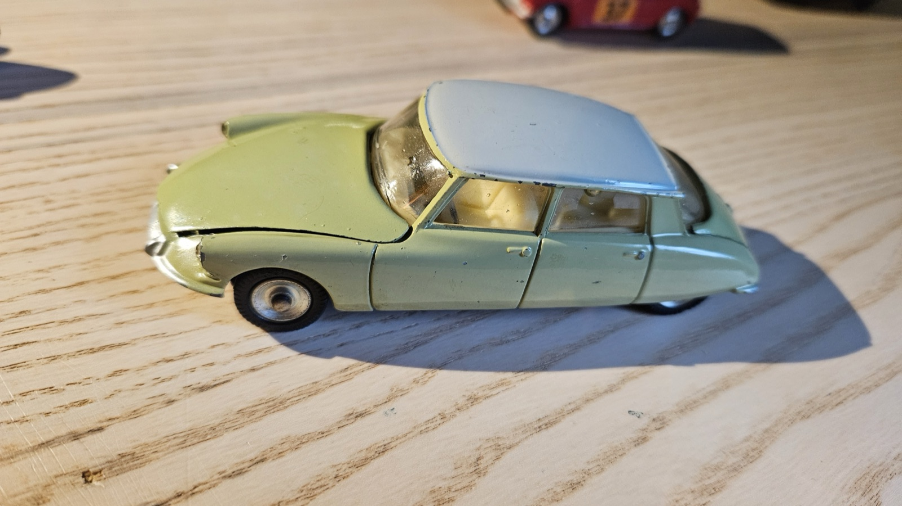

Pièce phare
Lot 01
Citroën DS19
L'icône de 1955, miniaturisée un an plus tard.
- Fabricant
- Dinky Toys France · réf. 24C
- Datation
- 1956–1959 · échelle 1/43
- Estimation
- 30–55 €
Dévoilée au Salon de Paris 1955, la DS provoque un choc : suspension hydropneumatique, ligne « soucoupe », des dizaines de milliers de commandes en quelques jours. Dinky la sort dès novembre 1956 — une réactivité remarquable.
Pour dater : le vitrage est le marqueur n°1. Pas de vitres = 24C (1956-58, la plus ancienne, la tienne). Le marquage « MECCANO · DINKY TOYS · CITROËN DS19 · FRANCE » le confirme.
Sources : voituresminiatures · ToyMart 24C